Formable Nations: Reworked
Formable Nations: Reworked is a complete rework and overhaul of the highly popular mod: Basic Mods: Formable Nations. With a team of dedicated developers and absolutely no lives we've recreated the mod into a functional, error-free, bug-squashed experience for all to play
Here you can find a list of nations that are available to you as a player, and the AI as well. They all have unique flags created by various talented artists online. By clicking a nation on this page you will be taken to a unique page for that nation which will contain information about the nation such as history, and how to form the nation similar to the eu4wiki if you were to google a nation when trying to form it allowing for all-in-one convenience of what you may be after!
Steam Workshop
New Formable Nations
Sorted by Continent{kind=link}
Europe
Adriatic Empire
Alscase-Lorraine(TODO)
Alpland
Angevin Empire
Armenian Empire
Republic of Armenia
Austrian Empire
Austro-Hungarian Empire
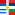 Balkan League
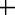 Baltic Union
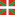 Basque Kingdom
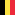 Belgium
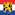 Benelux
United Kingdom of Bosnia-Serbia
Bremen-Verden
Carthage
Caucasia
Celtic Union
Cisalpina
Czechoslovakia
East Prussia
Emilia-Romagna
European Union
Franco-Iberian Empire
Franconia
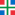 Frieslande
German Empire
Hanseatic League
Hesse-Nassau
Iberian Empire
Italian Empire
Italian Merchant Alliance
Jagiellonian Empire
Lombardy-Venetia
Lower Saxony
Lusitanian Empire
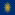 Macedon
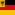 North German Confederation
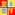 North Sea Empire
Pontos
Rhine Confederation
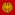 Roman Empire
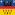 Siebenbuergen
Swabia
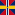 Sweden-Norway
Turkey
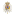 Two Sicilies
United Kingdom
Yugoslavia
Asia
Burma
People's Republic of China
Republic of China
Goguryeo
Arabia
Arabian Empire
Saudi Arabia
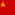 Soviet Union
Tatarstan
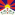 Tibetan Empire
Africa
MaghrebiaNorth America
Oceania
South America
Reworked Vanilla Formable Nations
These are nations that are in unmodded vanilla Europa Universalis IV that have been changed to follow the template/upgraded layout that the mod provides to the new nations to allow better functionality and quality of content.
Sorted by ContinentEurope
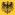 Kingdom of GermanyAndalusia
Armenia
Arab Countries (Algiers, Tunis, etc)
Australia
Bharat
Brazil
Great Britain
Bukhara
California
Canada
Chile
Colombia
Croatia
Deccan Empire
Delhi
Egypt
Asia
Africa
North America
Oceania
South America
Planned Content
Western Roman Empire
Eastern Roman Empire
Alexanders Empire
Third Rome (either Russia or Ottomans, same name different tags)
Gallo-Roman Empire
British Empire (GB + Colonies)
Eurasian Union
Majapahit Empire
The Horde (All horde nations)
Carthaginian Empire
Greater Portugal
Ummayad Caliphate
CSA
Islamic Confederation
Mongol Empire
Hunnic Empire
Palmyrene Empire
Almohad Caliphate
Europe (Militarily)
Kalmar Union (Unique Formation of Scandinavia as Denmark)
Scandinavian Empire (Scandinavia + Baltics + the bits of Germany needed to connect the two)
Wendish Empire
Serbian Empire
Hungarian Empire
Balkan League
Frankish Empire
Carolingian Empire
German Empire (Nazi Germany)
Greater German Reich
Germania
Polish Empire (Poland-Lithuania-Ruthenia)
Greater Polish Empire (regions of Poland, Carpathia, Ruthenia, Baltic & Bohemia proper)
Ostrogoths
Visigoths
Papal Italy
East Slavia
West Slavia
South Slavia
Great Slavia (Early Yugoslav Kingdom)
Holy Bulgar Empire
Kingdom of Bulgaria
Kingdom of Romania
Macedon
Kievan Rus
Belarus
Lombardy
Mercia
West Francia
Middle Francia
East Francia
Catalania
Slovenia
Latvia
Baltic Federation
Occitania
Aquitaine
Malta
Tybers (Brittany + Aquitaine)
Mamporia (Eastern Iberia)
Miracium (The whole coast of the Aegean Sea)
The Mediterranean Isles
Danubian Federation
The Kingdom of the Knights
Dacia
Gothia
Illyria
The Oriental Union (Japan, China, Korea)
Tibetan Empire
Imperial Japan (WW2 borders)
Gupta Empire
Yuan Empire
Republic of China
People’s Republic of China
Taiping (Christian China)
Assyria
Ayutthaya
Siamese Empire
Old Persian Empire
Parthia
Durrani Empire
Iran
Pakistan
Palestine
Korea
Thailand
Azerbaijan
Kurdistan
Mesopotamia
Transsiberia
Bhutan
Levant
Judea
Kingdom of Kartli-Kakheti
Abkhazia
Samtske
Guria
Bangladesh
Egyptian Empire
Mali Empire
Ghana Empire
North African Union
Ugrian Union
Zulu Empire (Fictional extension of the Zulu Kingdom, covers most of South Africa and the coastline towards the Horn of Africa)
Zulu Kingdom
Swahili on the Swahili Coast
Madagascar
Kenya
Zimbabwe
Azores
Madeira
Boers
Somalia
Bantu
Indonesia
New Zealand
The North American Empire
Incan Empire
Aztec Empire (Fictional, continuation of the Sunset Invasion from CK2)
The Latin Empire
Brazil
Guyana
Nicaragua
Honduras
Costa Rica
El Salvador
Guatemala
Panama
La Plata
Argentina
Chile
Bolivia
Colombia
Ecuador
Paraguay
Peru
Suriname
Uruguay
Venezuela
European Union
Native American Federation
Iroquois Federation
African Union
Compatibility
Basic Mods: Formable Nations is not compatible with mods that edit provinces or province IDs (like Extended Timeline does) BUT will soon include an Extended Timeline Version - though that itself will also be a major project as a small team so it will come; but not right this moment.
Images
Lots of cool images and screenshots of nations that have either formed naturally or through console for develope purposes.